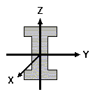

To select and enter materials to be used for present geometry data record.
- E: Elastic Modulus.
- Rho: Weight Density.
- G: Young's Modules.
- Nu: Poisson's Ratio.
- fy: Yielding Strength.
- fu: Ultimate Strength.
To define product
- A: cross section area.
- Iyy: area moment of inertia w.r.t. cross section's y axis.
- Izz: area moment of inertia w.r.t. cross section's z axis.
- J: polar area moment of inertia.
- : List of second moments of area

- Base node and rotation
- node: select a defined node as base for defining present node. Or leave it blank if no base
- roty: rotation is applied to Nx/y/z before they are added to detla x/y/z. So the formula is Rot(N.x/y/z, roty_n) + Rot(dx/y/z, roty_f).
- Delta x/y/z: formula examples:
- Parameter + 0.5 + 5*Math.cos(30*Math.PI/180)
- +(Parameter - 0.5)/3
- roty: rotation is applied to dx/dy/dz before they are added to base node's x/y/z. So the formula is N.x/y/z(base) + Rot(dx/y/z, roty).
To define members for present geometry (data record).
- NodeI: starting node of the member.
- NodeJ: ending node of the member.
There are two ways to explicitly set the orientation of the a member's y-axis, NodeK or rotx.
- NodeK: if a K node is defined, the three joints (I,J,K) entered for the member are used to define a plane. This plane is the plane of the member's x and y-axes. The local z-axis is defined based on the right hand rule using the x and y-axes. See the image below.
- rotx: positive value is counter-clockwise about the x-axis, with the x-axis pointing towards you.
Selecting NodeK, rotx will be set to empty. Entering rotx will remove the selection of NodeK.
To define connections for present geometry data record.
To define document for present geometry data record.
To define configurations of loads and design for the analysis to be done for present geometry data record.
- LC Name: Load Configuration (LC) Name.
- 3D: Check/uncheck to include/exclude the loads defined in LC in the the 3D illustration.
- DC Name: Design Configuration (DC) Name.
- Analysis: Click to perform analysis based on defined geometry, LC and DC.
- Results: Output files ready for viewing and/or downloading.
- Report: Analsyis report.
To define geo associations for present geometry data record.
To select from app database and add to a group of products/equipments to be used on present geometry.
Loading Configuraiton (LC) details.
- Member: select a structural member for attaching equipment(s).
- Attachments: select equipment to attach and specify attaching parameters.
- RAD: calculated equipment RAD center elevation.
- Azimuth: calculated equipment azimuth, equal to global ROTY = roty of attaching. Global Y = clockwise rotation of X w.r.t vertical Y from north.
- Status: the status of the equipment.
- EXTN: existing.
- PROP: proposed.
- RLCTD: relocated.
- RSVD: reserved.
- FUTR: futrue.
- tbRLCTD: to be relocated.
- tbRMVD: to be removed.
- N/A: not available or not set.
- Owner: owner/carrier.
- Sym. / Tech.: system and/or technology of the equipment.
Design Configuraiton (DC) details.
- Global Offsets: offsets from the origin of the global coordiante system.
- Global Rotations: rotation w.r.t to the axles of the global coordiante system. Gloabl X/Y/Z are pointing to East, Sky, and North, respectively. ROTY is the clockwise rotation of Z axis w.r.t Y. - AGAINST right-hand rule.
- Code: design code to be used for code checking.
- Wind Pressure: value to be entered for wind load calculation.
- Wind Directions: wind directions to be considered for analysis. Pay attention to the input format.
- Notes: any additional notes.
Offsets from the origin and rotation w.r.t. the axles of member's local coordinate system (lcs).
To enter design reaction values and
Media Content